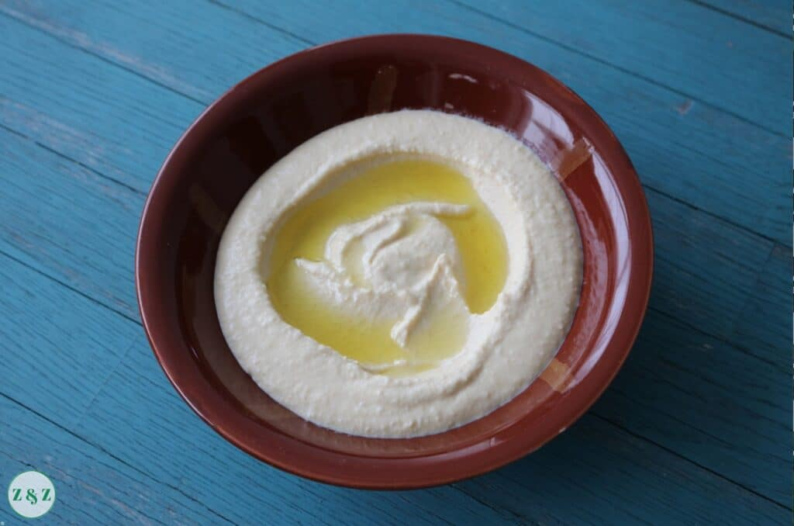

Lebanese Hummus

Description
Learning to make the perfect hummus is a matter of trial and error.
There are little shops all over Lebanon and the Levant that specialise in just hummus
and foul (fava beans),
which I especially love visiting for breakfast.
Ingredients
- 1 cup dried chickpeas
- 1 tbsp bicarbonate of soda + 1 tsp
- 1/2 cup of tahini
- 2 large lemons
- 1 tsp salt
- 1-2 gloves of garlic
- 2 ice cubes
How to make Hummus
- Soak chickpeas
- Rinse chickpeas
- Bring to a boil
- Drain chickpeas
- Remove skins
- Put chickpeas, tahini, lemon juice,
garlic, salt, olive oil in the food processor
- Taste hummus etc